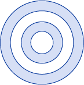
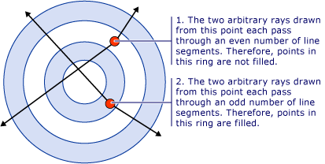
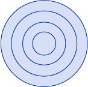
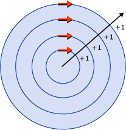
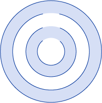
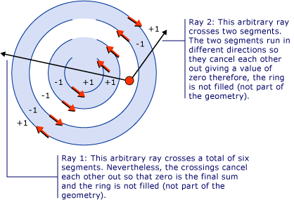
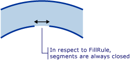

Практическое руководство. Управление заливкой составных фигур
FillRule Свойство GeometryGroup или PathGeometry, указывает «правило», которое Составная фигура использует для определения, является ли заданная точка частью геометрии. Существует два возможных значения для FillRule: EvenOdd и Nonzero. Следующие разделы описывают использование этих двух правил.
EvenOdd: Это правило определяет, находится ли точка в области заполнения, рисования луча от этой точки до бесконечности в любом направлении и подсчета числа сегментов пути в пределах заданной фигуры пересекает луч. Если это число нечетное, точка находится внутри; если четное — точка находится снаружи.
Например, ниже XAML создает составной фигуры, состоящий из ряда концентрических колец (мишень) с FillRule присвоено EvenOdd.
<Path Stroke="Black" StrokeThickness="1" Fill="#CCCCFF">
<Path.Data>
<GeometryGroup FillRule="EvenOdd">
<EllipseGeometry RadiusX="50" RadiusY="50" Center="75,75" />
<EllipseGeometry RadiusX="70" RadiusY="70" Center="75,75" />
<EllipseGeometry RadiusX="100" RadiusY="100" Center="75,75" />
<EllipseGeometry RadiusX="120" RadiusY="120" Center="75,75" />
</GeometryGroup>
</Path.Data>
</Path>
На следующем рисунке показана фигура, созданная в предыдущем примере.

На предыдущем рисунке Обратите внимание на то, что центр и третий кольцо не заполнены. Это потому, что луч, нарисованный из любой точки в одном из этих двух колец проходит через четное число сегментов. Показано на следующем рисунке:

Ненулевое значение: Это правило определяет, находится ли точка в области заполнения пути, рисования луча от этой точки до бесконечности в любом направлении и проверкой мест, в которых сегмент фигуры пересекает луч. Начиная с нуля, добавляется единица каждый раз, когда сегмент пересекает луч слева направо, и вычитается единица каждый раз, когда сегмент пересекает луч справа налево. Если после подсчета пересечений результат равен нулю, то точка находится снаружи пути. В противном случае — она находится внутри.
<Path Stroke="Black" StrokeThickness="1" Fill="#CCCCFF">
<Path.Data>
<GeometryGroup FillRule="NonZero">
<EllipseGeometry RadiusX="50" RadiusY="50" Center="75,75" />
<EllipseGeometry RadiusX="70" RadiusY="70" Center="75,75" />
<EllipseGeometry RadiusX="100" RadiusY="100" Center="75,75" />
<EllipseGeometry RadiusX="120" RadiusY="120" Center="75,75" />
</GeometryGroup>
</Path.Data>
</Path>
В предыдущем примере, значение Nonzero для FillRule дает в результате следующий рисунок:

Как можно видеть, все кольца заполнены. Это связано с тем, что все сегменты идут в одном направлении и поэтому луч, рисуемый из любой точки, будет пересекать один или несколько сегментов и сумма пересечений не будет равна нулю. Например на следующем рисунке красные стрелки обозначают направление рисования сегментов, и белая стрелка показывает произвольный луч, идущий из точки во внутреннем кольце. Начиная с нуля, для каждого сегмента, который пересекает луч, значение 1 добавляется, так как сегмент пересекает луч слева направо.

Чтобы лучше продемонстрировать поведение Nonzero правило требуется более сложная фигура с сегментами, идущими в разных направлениях является обязательным. Приведенный ниже код XAML создает фигуру, аналогичную аналогичен предыдущему примеру, за исключением того, что она создается с PathGeometry а не EllipseGeometry которого создаются четыре концентрических дуги а не полностью замкнутые концентрические окружности.
<Path Stroke="Black" StrokeThickness="1" Fill="#CCCCFF">
<Path.Data>
<GeometryGroup FillRule="NonZero">
<PathGeometry>
<PathGeometry.Figures>
<!-- Inner Ring -->
<PathFigure StartPoint="10,120">
<PathFigure.Segments>
<PathSegmentCollection>
<ArcSegment Size="50,50" IsLargeArc="True" SweepDirection="CounterClockwise" Point="25,120" />
</PathSegmentCollection>
</PathFigure.Segments>
</PathFigure>
<!-- Second Ring -->
<PathFigure StartPoint="10,100">
<PathFigure.Segments>
<PathSegmentCollection>
<ArcSegment Size="70,70" IsLargeArc="True" SweepDirection="CounterClockwise" Point="25,100" />
</PathSegmentCollection>
</PathFigure.Segments>
</PathFigure>
<!-- Third Ring (Not part of path) -->
<PathFigure StartPoint="10,70">
<PathFigure.Segments>
<PathSegmentCollection>
<ArcSegment Size="100,100" IsLargeArc="True" SweepDirection="CounterClockwise" Point="25,70" />
</PathSegmentCollection>
</PathFigure.Segments>
</PathFigure>
<!-- Outer Ring -->
<PathFigure StartPoint="10,300">
<PathFigure.Segments>
<ArcSegment Size="130,130" IsLargeArc="True" SweepDirection="Clockwise" Point="25,300" />
</PathFigure.Segments>
</PathFigure>
</PathGeometry.Figures>
</PathGeometry>
</GeometryGroup>
</Path.Data>
</Path>
На следующем рисунке показана фигура, созданная в предыдущем примере.

Обратите внимание, что третья дуга от центра не заполнена. На следующем рисунке показано, почему это так. На рисунке красные стрелки обозначают направление, в котором рисуются сегменты. Две белые стрелки показывают два произвольных луча, которые выходят из точки в «незаполненной» области. Как видно из рисунка, сумма значений для луча, пересекающего сегменты в пути, равна нулю. Как указано выше, сумма ноль означает, что точка не является частью геометрии (не является частью заливки), а сумма, которая не равна нулю, в том числе отрицательное значение, является частью геометрии.

Примечание. В рамках FillRule, все фигуры считаются замкнутыми. Если в сегменте есть разрыв, нарисуйте воображаемую линию, чтобы его закрыть. В приведенном выше примере имеются небольшие разрывы в кольцах. Учитывая это, можно предположить, что луч, проходящий через разрыв, даст другой результат, чем луч, проходящий в другом направлении. Ниже приведен увеличенный рисунок одного из этих разрывов и «воображаемый сегмент» (сегмент, нарисованный для применения FillRule), закрывает его.
